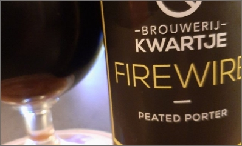

Proeflokaal
Zoals jullie weten heeft brouwerij Kwartje grootse plannen voor de toekomst een van deze plannen...
Artikel #2
Zoals jullie weten heeft brouwerij Kwartje grootse plannen voor de toekomst een van deze plannen...
Artikel #3
Zoals jullie weten heeft brouwerij Kwartje grootse plannen voor de toekomst een van deze plannen...
Artikel #4
Zoals jullie weten heeft brouwerij Kwartje grootse plannen voor de toekomst een van deze plannen...